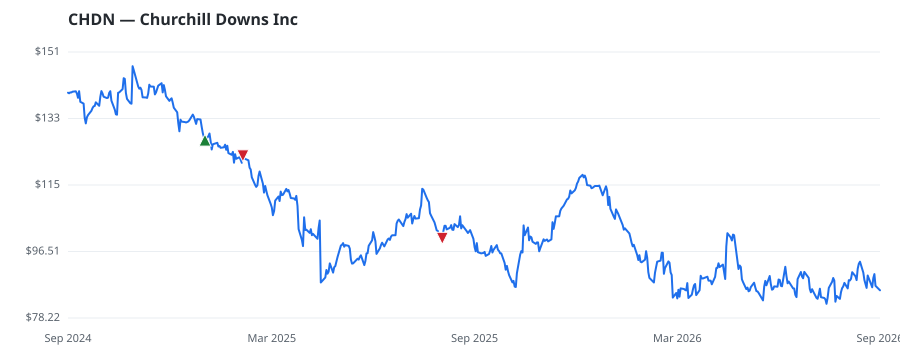

bullish · bearish · n/a — dots: price>SMA10 · SMA10>SMA50 · SMA50>SMA200 · up>down volume (20d)
Consumer Services · mid cap
Members who bought CHDN earned a dollar-weighted -20.9% from their disclosure dates, versus +9.6% for the S&P 500 over the same holding windows (-30.5% alpha).

▲ green = a disclosed purchase · ▼ red = a disclosed sale (plotted on disclosure date)
Churchill Downs Inc is a gaming entertainment, online wagering, and racing company. It operates through three business segments: Live and Historical Racing, Wagering Services, and Gaming. The Live and Historical Racing segment includes live and historical pari-mutuel racing. The Wagering Services segment includes the revenue and expenses from pari-mutuel wagers through TwinSpires, companies retail and online sports betting business and Gaming segment includes revenue and expenses for the casino properties and associated racetracks that support the casino license. The Gaming segment generates r SERVICES-RACING, INCLUDING TRACK OPERATION · website
| Revenue | $2.9B | Net income | $385.5M |
|---|---|---|---|
| Operating income | $683.8M | Diluted EPS | — |
| Assets | $7.5B | Equity | $1.0B |
| Member | Chamber | Out-performer | Disclosed buys $ | Return on buys |
|---|---|---|---|---|
| James Comer | house | — | $8K | -20.9% |
Disclosed $ figures are bracket midpoints — filings report ranges (e.g. $1,001–$15,000), not exact amounts.